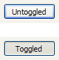
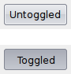
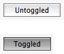

| Version: 2.9.4 |
#include </home/zeitlin/src/wx/github/interface/wx/tglbtn.h>
 Inheritance diagram for wxToggleButton:
Inheritance diagram for wxToggleButton:wxToggleButton is a button that stays pressed when clicked by the user.
In other words, it is similar to wxCheckBox in functionality but looks like a wxButton.
Since wxWidgets version 2.9.0 this control emits an update UI event.
You can see wxToggleButton in action in Controls Sample.
The following event handler macros redirect the events to member function handlers 'func' with prototypes like:
Event macros for events emitted by this class:
|  |  |  |
| wxMSW appearance | wxGTK appearance | wxMac appearance |
Public Member Functions | |
| wxToggleButton () | |
| Default constructor. | |
| wxToggleButton (wxWindow *parent, wxWindowID id, const wxString &label, const wxPoint &pos=wxDefaultPosition, const wxSize &size=wxDefaultSize, long style=0, const wxValidator &val=wxDefaultValidator, const wxString &name=wxCheckBoxNameStr) | |
| Constructor, creating and showing a toggle button. | |
| virtual | ~wxToggleButton () |
| Destructor, destroying the toggle button. | |
| bool | Create (wxWindow *parent, wxWindowID id, const wxString &label, const wxPoint &pos=wxDefaultPosition, const wxSize &size=wxDefaultSize, long style=0, const wxValidator &val=wxDefaultValidator, const wxString &name=wxCheckBoxNameStr) |
| Creates the toggle button for two-step construction. | |
| virtual bool | GetValue () const |
| Gets the state of the toggle button. | |
| virtual void | SetValue (bool state) |
| Sets the toggle button to the given state. | |
| wxToggleButton::wxToggleButton | ( | ) |
Default constructor.
| wxToggleButton::wxToggleButton | ( | wxWindow * | parent, |
| wxWindowID | id, | ||
| const wxString & | label, | ||
| const wxPoint & | pos = wxDefaultPosition, |
||
| const wxSize & | size = wxDefaultSize, |
||
| long | style = 0, |
||
| const wxValidator & | val = wxDefaultValidator, |
||
| const wxString & | name = wxCheckBoxNameStr |
||
| ) |
Constructor, creating and showing a toggle button.
| parent | Parent window. Must not be NULL. |
| id | Toggle button identifier. The value wxID_ANY indicates a default value. |
| label | Text to be displayed next to the toggle button. |
| pos | Toggle button position. If wxDefaultPosition is specified then a default position is chosen. |
| size | Toggle button size. If wxDefaultSize is specified then a default size is chosen. |
| style | Window style. See wxToggleButton. |
| val | Window validator. |
| name | Window name. |
| virtual wxToggleButton::~wxToggleButton | ( | ) | [virtual] |
Destructor, destroying the toggle button.
| bool wxToggleButton::Create | ( | wxWindow * | parent, |
| wxWindowID | id, | ||
| const wxString & | label, | ||
| const wxPoint & | pos = wxDefaultPosition, |
||
| const wxSize & | size = wxDefaultSize, |
||
| long | style = 0, |
||
| const wxValidator & | val = wxDefaultValidator, |
||
| const wxString & | name = wxCheckBoxNameStr |
||
| ) |
Creates the toggle button for two-step construction.
See wxToggleButton() for details.
| virtual bool wxToggleButton::GetValue | ( | ) | const [virtual] |
Gets the state of the toggle button.
Reimplemented in wxBitmapToggleButton.
| virtual void wxToggleButton::SetValue | ( | bool | state | ) | [virtual] |
Sets the toggle button to the given state.
This does not cause a EVT_TOGGLEBUTTON event to be emitted.
| state | If true, the button is pressed. |
Reimplemented in wxBitmapToggleButton.